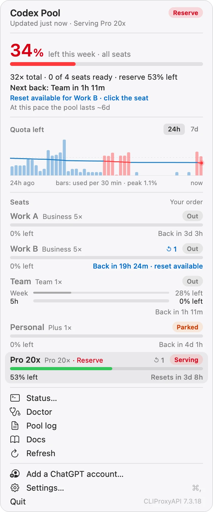
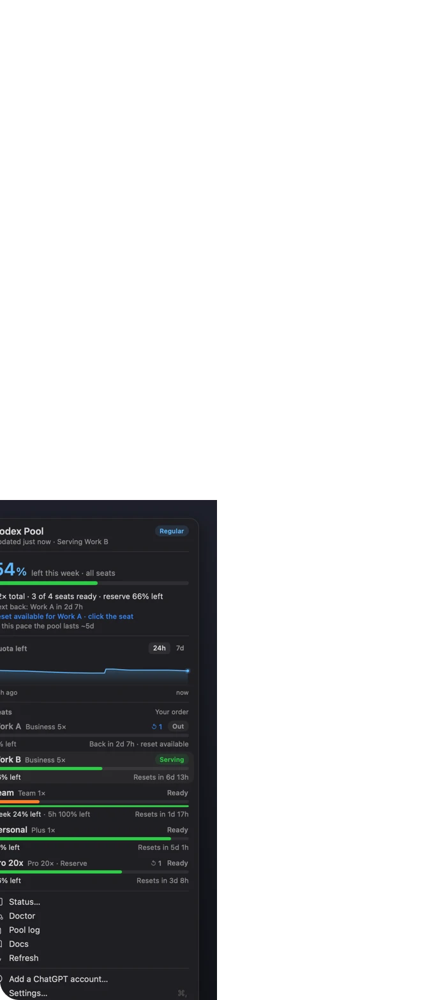
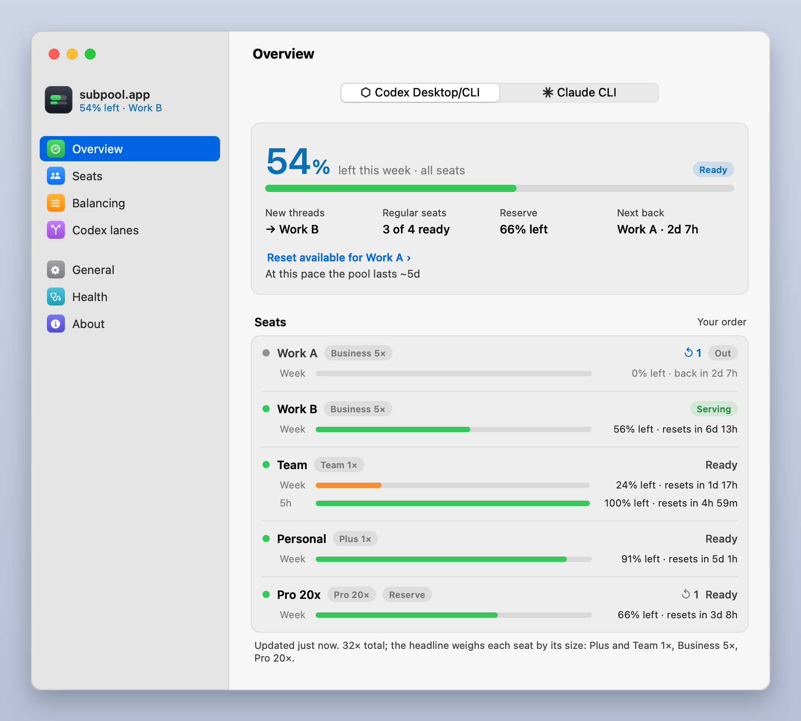
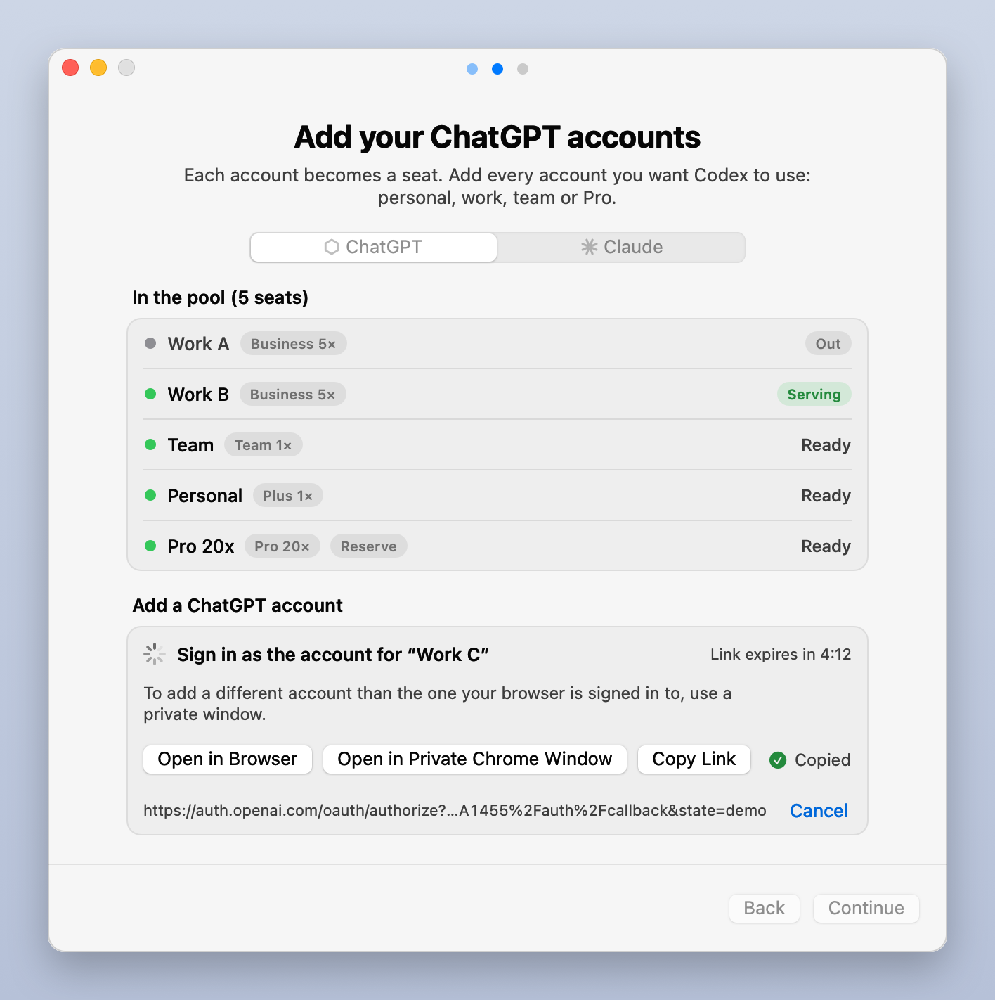

Automatic failover
A seat that runs out is replaced on the same request, in the middle of a turn if need be. You don't switch anything.
codexpool pools your ChatGPT accounts behind the Codex app and CLI. When one seat hits its usage limit, the next one picks up the same thread, so you keep working. A menu bar meter shows what is left across all of them.
curl -fsSL https://raw.githubusercontent.com/memfactorduke/codex-load-balancer/main/install.sh | bash
codexpool uses them one after another, so the work doesn't stop.
How it works
codexpool runs a small pool on 127.0.0.1 and answers as whichever seat has quota left. When that seat hits its limit, the pool sends the same request to the next seat, and the turn carries on after a pause of a second or two.
One seat serves at a time, highest priority first, so resets are staggered and prompt caching keeps working.
A thread stays on the seat it started on and moves only when that seat can't serve.
Give your biggest seat the lowest priority and mark it as the reserve. The meter turns red when it takes over.
Features
A seat that runs out is replaced on the same request, in the middle of a turn if need be. You don't switch anything.
Codex keeps its built-in provider, so every thread stays where it was. Encrypted reasoning and compactions carry across seats, and codexpool selftest checks any pair.
One number for the week across every seat, weighted by plan size. It counts down as you work and turns red when the reserve seat is serving.
Free resets banked on an account show on its seat, and one click redeems one. codexpool only redeems what the account already holds; it never buys anything.
Optional. Send token-heavy subagent work, like codebase sweeps and bulk edits, to other providers. The main agent stays on your seats.
The pool listens on loopback only, and an origin gate compiled into it refuses browser requests, so websites can't use it. Seat tokens are never copied or printed. No telemetry.
codexpool doctor explains every problem it finds and how to fix it.The app
A menu bar meter, a Settings window and a Setup assistant, in the system's own type, colours and symbols, light and dark.



codexpool gui.
codexpool setup does the same.Install
The installer checks your Mac, builds the pool from source and opens the Setup assistant. Run it again any time to upgrade.
Paste this into Terminal.
curl -fsSL https://raw.githubusercontent.com/memfactorduke/codex-load-balancer/main/install.sh | bash
To see the plan first, replace the final bash with bash -s -- --dry-run: it prints every step and changes nothing.
Paste this prompt into your coding agent (Codex or another) on the Mac you're setting up. It runs the installer, asks what to call each account and hands you a sign-in link for each one: all you do is sign in. It works when you're away from that Mac too: through Screen Sharing, an SSH tunnel, or by sending the agent the address the sign-in ends on, from any device.
Set up codexpool on this Mac (https://github.com/memfactorduke/codex-load-balancer): it pools my ChatGPT accounts behind the Codex app and CLI. This message is my go-ahead to install it (and uv, Astral's Python manager, if this Mac has no Python 3.11 or later), sign in my accounts and mark the reserve. Rules: no sudo; never ask for my Mac or ChatGPT password; never read ~/.codexpool/auth/ or ~/.codex/auth.json and never print a token; ask me before `codexpool uninstall`; if a step fails, stop and show me the error and the fix it prints, don't retry in a loop; if the install stops at the Keychain, ask me to unlock it (I run `security unlock-keychain` myself) and wait. You can't answer terminal prompts, so use exactly the commands below (not `codexpool setup`, which needs a terminal). They need the network, the login Keychain and files outside your workspace: if you have a sandbox, ask me to approve running them outside it. 1. Ask me in one message: a short name for each ChatGPT account (for example Personal, Work, Team), in the order to use them; which one is the reserve, used last (usually the biggest plan); and whether I'm at this Mac's screen or somewhere else (over SSH, or you run on a Mac I'm not sitting at). If I'm not at the screen, tell me first: this Mac has to be logged in to its desktop as this user and stay logged in (log in once through Screen Sharing, and again after a restart), because the pool runs as launchd agents in that login. 2. Install. Run this in the background (your tool's background mode, or `nohup ... &`), since the first install builds the pool from source and can take up to 15 minutes, and wait for it to end: (curl -fsSL https://raw.githubusercontent.com/memfactorduke/codex-load-balancer/main/install.sh | bash -s -- --yes --no-gui) > /tmp/codexpool-install.log 2>&1 Then read the log. When the install worked, its last line starts with "Docs:"; otherwise it stopped, so show me its last lines (the "✗" line and the fix under it). If `codexpool` isn't on your PATH, use ~/.local/bin/codexpool. Run `codexpool version`: if it is older than 1.1.0, stop and tell me. The closing doctor check in the log reports 0 seats and a warning under "Codex app" (Codex keeps its own login until the first seat): both expected until step 3. If a Setup assistant window opens on this Mac, I can close it. Then read ~/.codexpool/AGENTS.md and follow it. 3. Sign in each account, one at a time. Run this in the background too and read its log: codexpool login "<Name>" --no-open < /dev/null > /tmp/codexpool-login.log 2>&1 Send me the https:// link from the log and tell me: first close every private window left from the previous account (a browser's private windows share one session until the last one closes), then open the link in a new private (incognito) window, sign in to THAT account and pick its workspace; the link expires after about 5 minutes (then run the login again). The login has ended when the log has a line starting "seat " (it worked) or "login did not complete" (it did not; the reason follows). If the log also has a line starting "That was", the browser signed in to an account that is already in, and nothing was added: tell me, and run this login again. If I'm not at this Mac's screen, the sign-in ends at http://localhost:1455 on THIS Mac. Tell me to do one of these. Open the link in a browser on this Mac through Screen Sharing. Or keep this running on my own computer and open the link there (it needs Remote Login on in this Mac's Sharing settings): ssh -N -L 1455:localhost:1455 <user>@<address> Fill it in for me: <user> is `whoami`; on the same network, <address> is `scutil --get LocalHostName` plus .local. If the page already failed, I start the tunnel and reload it while the login is still waiting. Or, from any device (a phone too): I open the link there and sign in, and when the page fails to load, I send you its full address (it starts http://localhost:1455/auth/callback?code= and holds a one-time code, not a token); you then run `curl -s "<that address>" > /dev/null` on this Mac while the login is still waiting. 4. Run `codexpool reserve "<Reserve name>"` (skip it if I named none), then `codexpool doctor` (it must end with OK) and `codexpool status --live`. 5. Report the seat table and the doctor result, then tell me to quit the Codex app fully (⌘Q) and reopen it (through Screen Sharing if I'm not at the screen). If you are Codex: this thread keeps working until then and is still there afterwards; from then on it and every new thread go through the pool. 6. Ask whether I also want subagent lanes (models from other providers for token-heavy subagent work). If yes, follow "Paste this to your agent" in ~/.codexpool/docs/LANES.md.
The Setup assistant opens by itself. Sign in to each account; for accounts your browser isn't signed in to, open the link in a private window. Each seat is sized by its plan. Codex keeps working on its own login until the first account is in, and that sign-in points it at the pool.
Prefer the terminal? codexpool setup walks you through the same steps there. To add accounts later, choose Add a ChatGPT account… in the menu bar or run codexpool gui setup-welcome.
Click Quit and Reopen Codex… on the assistant's last step, or quit the Codex app with ⌘Q and open it again. Your threads are all there, and the meter sits next to the clock.
Built for heavy Codex users
If you run Codex all day on more than one ChatGPT account (personal, work, team, Pro), switching by hand costs you the turn and your train of thought.
| Switching accounts yourself | With codexpool | |
|---|---|---|
| When a seat runs out | The turn stops. You sign out, sign in to another account and ask again. | The same request goes to the next seat, and the turn carries on. |
| Knowing what's left | One account at a time, in the app's own meter. | One number for every seat in the menu bar, weighted by plan size. |
| Picking the next account | You guess which one still has quota. | Your priority order decides, and the reserve goes last. |
| Banked resets | Easy to forget they're there. | Shown on each seat, redeemed in one click. |
| Your Codex sign-in | Changes every time you switch. | Stays as it is. Each seat has its own login in the pool. |
FAQ
More in the README and the troubleshooting guide.
Yes. The codex CLI reads the same ~/.codex/config.toml as the app, so the CLI and anything else that uses it go through the pool.
Yes. Codex keeps its built-in provider and only openai_base_url changes, so every existing thread stays visible and continues through the pool. Uninstalling never touches your threads either.
Codex requests fail with a usage-limit error until a seat comes back, just as they would with a single account. The menu bar number turns red and the popover says which seat is back next, and you get a notification. A banked reset, if you have one, brings a seat back at once.
Your model traffic and the usage and reset checks go to ChatGPT through the pool, as Codex's own requests would, and adding a seat signs in with OpenAI. Installing and upgrading download from GitHub, go.dev, the Go module proxy and checksum database (proxy.golang.org, sum.golang.org) and PyPI (PyObjC, for the menu bar app), plus astral.sh for uv if your Mac has no Python 3.11 or later. If you set up lanes, lane subagents' requests go to the providers you chose. There is no telemetry.
Any plan that includes Codex: Plus, Pro, Business, Team and others. Each seat is sized by its plan (Plus 1×, Business 5×, Pro 20×) so the meter weighs it fairly, and you can change a seat's size.
Run codexpool uninstall --yes. It stops the background agents, restores your Codex config and removes the command; then reopen Codex. Seat logins and settings stay in ~/.codexpool until you delete the folder.
No. codexpool is an independent project, not affiliated with or endorsed by OpenAI. Codex and ChatGPT are trademarks of OpenAI.
Use it only with accounts you own, and follow the terms that apply to them. Every seat is used from the same Mac and the same Codex installation, so the pooling isn't hidden. The README's terms of service section explains what that means; whether to run it is your call.
License
codexpool is free and source-available under the PolyForm Noncommercial License 1.0.0.